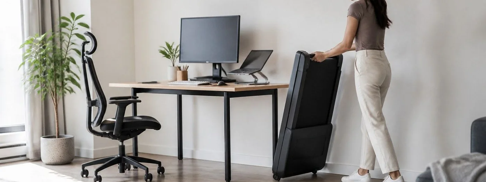

This support page focuses on remote controls, display, and safety features for under-desk treadmills. Product comparisons belong on 7 Best Under-Desk Treadmills. Previous cloud article: office plant grow lights.
Remote Controls, Display, and Safety Features
Work Pace. The best under-desk treadmill is not the fastest machine; it is the one that supports a calm walking pace while typing, reading, and taking calls. Speed steps, motor smoothness, and quick pauses matter more than headline horsepower. For remote controls, display, and safety features, judge the walking pad by whether it makes light movement easy during normal work rather than pushing a workout mindset into every task.
A practical test for remote controls, display, and safety features is to walk during a twenty-minute email block, a quiet reading block, and one short call. Notice belt comfort, noise, remote access, desk wobble, and whether stopping feels effortless.
Desk Fit. Measure the standing desk, chair clearance, belt length, and where the console or remote will live. A walking pad that fits the room but blocks the chair path can become annoying after one week. For remote controls, display, and safety features, judge the walking pad by whether it makes light movement easy during normal work rather than pushing a workout mindset into every task.
A practical test for remote controls, display, and safety features is to walk during a twenty-minute email block, a quiet reading block, and one short call. Notice belt comfort, noise, remote access, desk wobble, and whether stopping feels effortless.
Noise Control. Motor hum, footfall sound, belt rubbing, and beeps can affect coworkers, neighbors, and calls. Check noise expectations for the real floor surface, not only marketing specs. For remote controls, display, and safety features, judge the walking pad by whether it makes light movement easy during normal work rather than pushing a workout mindset into every task.
A practical test for remote controls, display, and safety features is to walk during a twenty-minute email block, a quiet reading block, and one short call. Notice belt comfort, noise, remote access, desk wobble, and whether stopping feels effortless.
Safety Habits. A useful setup makes starting, stopping, and stepping off feel natural. Remote controls, auto-stop behavior, side rails or rail-free design, and display visibility all shape daily confidence. For remote controls, display, and safety features, judge the walking pad by whether it makes light movement easy during normal work rather than pushing a workout mindset into every task.
A practical test for remote controls, display, and safety features is to walk during a twenty-minute email block, a quiet reading block, and one short call. Notice belt comfort, noise, remote access, desk wobble, and whether stopping feels effortless.
Storage Routine. Many people need to roll the treadmill under a sofa, beside a cabinet, or against a wall after work. Weight, wheel quality, handle placement, and vertical-storage limits matter for small offices. For remote controls, display, and safety features, judge the walking pad by whether it makes light movement easy during normal work rather than pushing a workout mindset into every task.
A practical test for remote controls, display, and safety features is to walk during a twenty-minute email block, a quiet reading block, and one short call. Notice belt comfort, noise, remote access, desk wobble, and whether stopping feels effortless.
Value Check. Value comes from belt feel, motor reliability, weight capacity, warranty support, replacement-lube guidance, floor protection, and a design that fits daily walking without turning the office into a gym. For remote controls, display, and safety features, judge the walking pad by whether it makes light movement easy during normal work rather than pushing a workout mindset into every task.
A practical test for remote controls, display, and safety features is to walk during a twenty-minute email block, a quiet reading block, and one short call. Notice belt comfort, noise, remote access, desk wobble, and whether stopping feels effortless.
Office fit rehearsal. Before buying, map desk height, stride length, floor surface, storage route, outlet position, and meeting habits. That rehearsal helps match speed range, deck size, controls, noise level, and durability for remote controls, display, and safety features without overbuying.
Walking-pad setup checklist
Work Pace. The best under-desk treadmill is not the fastest machine; it is the one that supports a calm walking pace while typing, reading, and taking calls. Speed steps, motor smoothness, and quick pauses matter more than headline horsepower. For buyer checklist for remote controls, display, and safety features, judge the walking pad by whether it makes light movement easy during normal work rather than pushing a workout mindset into every task.
A practical test for buyer checklist for remote controls, display, and safety features is to walk during a twenty-minute email block, a quiet reading block, and one short call. Notice belt comfort, noise, remote access, desk wobble, and whether stopping feels effortless.
Desk Fit. Measure the standing desk, chair clearance, belt length, and where the console or remote will live. A walking pad that fits the room but blocks the chair path can become annoying after one week. For buyer checklist for remote controls, display, and safety features, judge the walking pad by whether it makes light movement easy during normal work rather than pushing a workout mindset into every task.
A practical test for buyer checklist for remote controls, display, and safety features is to walk during a twenty-minute email block, a quiet reading block, and one short call. Notice belt comfort, noise, remote access, desk wobble, and whether stopping feels effortless.
Noise Control. Motor hum, footfall sound, belt rubbing, and beeps can affect coworkers, neighbors, and calls. Check noise expectations for the real floor surface, not only marketing specs. For buyer checklist for remote controls, display, and safety features, judge the walking pad by whether it makes light movement easy during normal work rather than pushing a workout mindset into every task.
A practical test for buyer checklist for remote controls, display, and safety features is to walk during a twenty-minute email block, a quiet reading block, and one short call. Notice belt comfort, noise, remote access, desk wobble, and whether stopping feels effortless.
Safety Habits. A useful setup makes starting, stopping, and stepping off feel natural. Remote controls, auto-stop behavior, side rails or rail-free design, and display visibility all shape daily confidence. For buyer checklist for remote controls, display, and safety features, judge the walking pad by whether it makes light movement easy during normal work rather than pushing a workout mindset into every task.
A practical test for buyer checklist for remote controls, display, and safety features is to walk during a twenty-minute email block, a quiet reading block, and one short call. Notice belt comfort, noise, remote access, desk wobble, and whether stopping feels effortless.
Storage Routine. Many people need to roll the treadmill under a sofa, beside a cabinet, or against a wall after work. Weight, wheel quality, handle placement, and vertical-storage limits matter for small offices. For buyer checklist for remote controls, display, and safety features, judge the walking pad by whether it makes light movement easy during normal work rather than pushing a workout mindset into every task.
A practical test for buyer checklist for remote controls, display, and safety features is to walk during a twenty-minute email block, a quiet reading block, and one short call. Notice belt comfort, noise, remote access, desk wobble, and whether stopping feels effortless.
Value Check. Value comes from belt feel, motor reliability, weight capacity, warranty support, replacement-lube guidance, floor protection, and a design that fits daily walking without turning the office into a gym. For buyer checklist for remote controls, display, and safety features, judge the walking pad by whether it makes light movement easy during normal work rather than pushing a workout mindset into every task.
A practical test for buyer checklist for remote controls, display, and safety features is to walk during a twenty-minute email block, a quiet reading block, and one short call. Notice belt comfort, noise, remote access, desk wobble, and whether stopping feels effortless.
Office fit rehearsal. Before buying, map desk height, stride length, floor surface, storage route, outlet position, and meeting habits. That rehearsal helps match speed range, deck size, controls, noise level, and durability for buyer checklist for remote controls, display, and safety features without overbuying.
Once the workday walking routine is clear, compare actual under-desk treadmills here: 7 Best Under-Desk Treadmills.